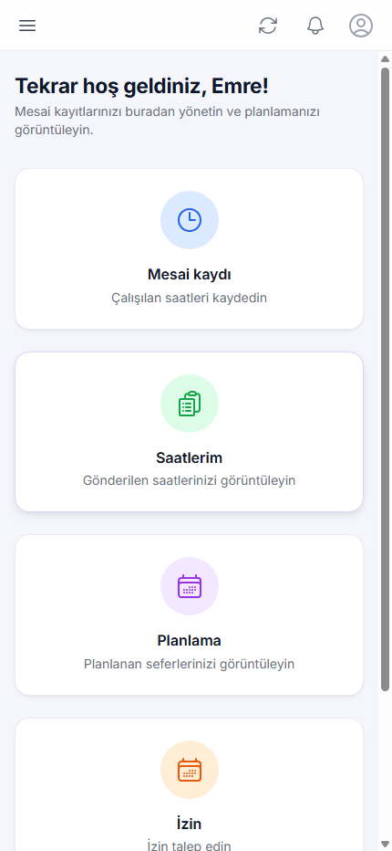
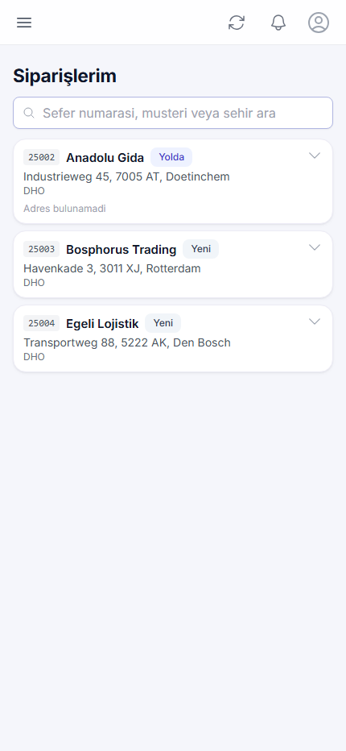
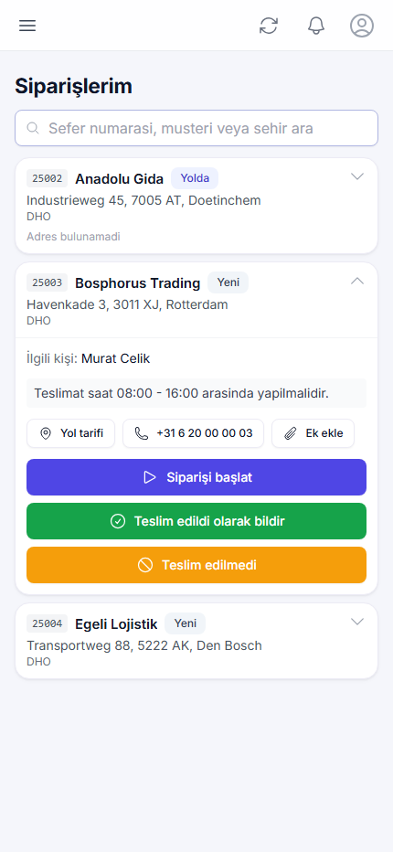
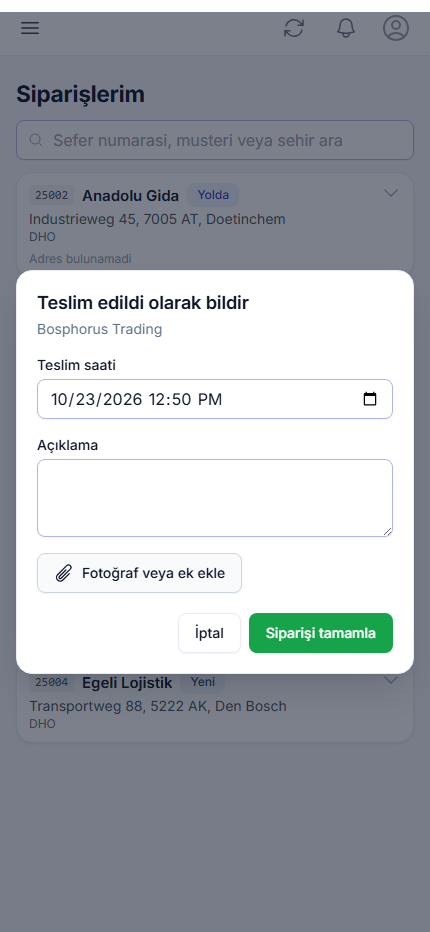
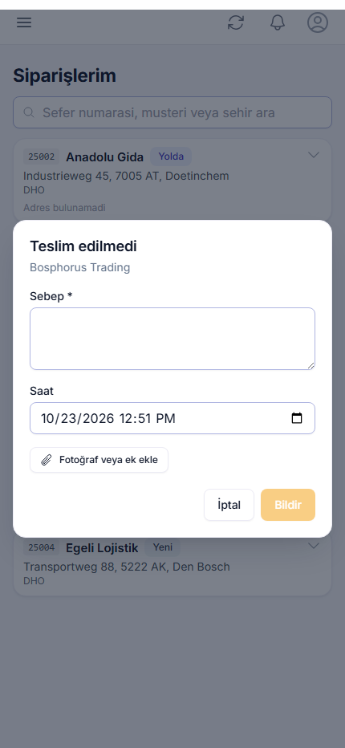

Siparişleri görme, başlatma ve bildirme kılavuzu
Şoförler içinMoveo TMS, nakliye işini tek bir yerde toplayan bir taşıma yönetim sistemidir. Sistemde üç taraf birlikte çalışır: siparişi veren müşteri, işi yapan şoför ve her şeyi gözeten planlama ekibi. Üçü de aynı veriyi görür; kimse ayrı bir listeyle çalışmaz. Bu nedenle telefonla durum sorma ihtiyacı büyük ölçüde ortadan kalkar.
Bir siparişin hayatı her zaman aynı yolu izler. Müşteri bir sipariş oluşturur ve onu bir şoföre atar. Siz siparişi telefonunuzda anında görürsünüz. Yola çıktığınızda siparişi başlatırsınız, teslimatı yaptığınızda teslim edildi olarak bildirirsiniz. Teslimat gerçekleşmezse sebebini yazarsınız. Her adımda sistem müşteriyi bilgilendirir; sizin ayrıca telefon etmenize gerek kalmaz.
| Durum | Anlamı | Ne zaman oluşur |
|---|---|---|
| Yeni | Sipariş size atandı, henüz başlamadınız. | Müşteri siparişi kaydettiğinde. |
| Yolda | İşe başladınız. | "Siparişi başlat" dediğinizde. |
| Teslim edildi | Yük teslim edildi, iş bitti. | Teslimatı bildirdiğinizde. |
| Teslim edilmedi | Teslimat yapılamadı; sebebi kayıtlı. | Sebep yazıp bildirdiğinizde. |
| İptal edildi | Sipariş geri çekildi, artık yapmanız gerekmiyor. | Müşteri siparişi iptal ettiğinde. |
Sistem iki ayrı kanaldan haber verir. Size anlık bildirim (push) gelir: yeni bir sipariş geldiğinde, bir sipariş iptal edildiğinde veya listenizin sırası değiştiğinde telefonunuzda uyarı belirir. Müşteriye ise e-posta gider: siz işe başladığınızda, teslim ettiğinizde ve teslim edemediğinizde.
Aracınızda bir takip cihazı bulunur. Sistem bu cihazdan aracın konumunu, hareket halinde olup olmadığını, yapılan seferleri ve kilometre sayacını alır. Müşteri size atanan aracı haritada görebilir. Bu veriler aynı zamanda çalışma sürenizin hesaplanmasında kullanılır.
Telefonunuzun tarayıcısından tms.moveo-bv.nl adresine gidin. E-posta adresinizi ve şifrenizi girip Giriş yap düğmesine basın. Şifrenizi unuttuysanız planlama ekibinden sıfırlama isteyin.
Giriş yaptıktan sonra menüden dili Hollandaca, İngilizce veya Türkçe olarak seçebilirsiniz. Seçiminiz telefonunuzda saklanır.

Uygulamayı ana ekranınıza eklemenizi tavsiye ederiz. Android cihazlarda tarayıcı menüsünden Ana ekrana ekle seçeneğini kullanın. iPhone'da Safari ile açıp paylaş menüsünden Ana Ekrana Ekle deyin. Kurulumdan sonra simgeye dokunarak adres çubuğu olmadan, tam ekran açılır.
Giriş yaptığınızda dört hızlı erişim kartı görürsünüz. Mesai kaydı ile çalıştığınız saatleri girersiniz. Saatlerim ile gönderdiğiniz saatleri görürsünüz. Planlama size verilen seferleri gösterir. İzin ile izin talebinde bulunursunuz.
Siparişlerinize sol menüdeki Siparişlerim bağlantısından ulaşırsınız. Günlük işinizi buradan yürüteceksiniz.
Bu ekranda size atanmış bütün siparişler, yapılması gereken sırayla listelenir. Sıralamayı müşteri belirler; en üstteki iş ilk yapılacak iştir. Her satırda sefer numarası, firma adı, durum etiketi ve teslimat adresi görünür.

Liste kendiliğinden tazelenir. Müşteri yeni bir iş eklediğinde veya sırayı değiştirdiğinde listeniz güncellenir ve telefonunuza bildirim gelir.
Bir siparişin üzerine dokunduğunuzda detaylar açılır. Burada ilgili kişinin adı, müşterinin yazdığı açıklama ve üç işlem düğmesi bulunur.

Yola çıkmadan önce Siparişi başlat düğmesine basın. Durum Yolda olarak değişir ve müşteriye e-posta gider. Böylece müşteri işin yolda olduğunu bilir ve sizi aramaz.
Başlattığınız bir işi müşteri yine de iptal edebilir. Böyle bir durumda telefonunuza bildirim gelir ve iş listenizden düşer. Bildirimi gördüğünüzde o adrese gitmeyi bırakın.
Yükü teslim ettikten sonra Teslim edildi olarak bildir düğmesine basın. Açılan pencerede teslim saati hazır gelir; gerekirse değiştirebilirsiniz. İsterseniz kısa bir açıklama yazabilir ve teslimata ait fotoğraf veya imzalı belge ekleyebilirsiniz.

Siparişi tamamla dediğinizde durum Teslim edildi olur ve müşteriye e-posta gider. İş listenizden kalkar.
Teslimat yapılamadıysa Teslim edilmedi düğmesine basın ve sebebini yazın. Sebep alanını boş bırakmayın; müşteri yalnızca bu açıklamayı görür ve buna göre hareket eder.

Sık karşılaşılan sebepler: alıcı adreste bulunamadı, depo kapalıydı, yük kabul edilmedi, adres yanlış, bekleme süresi aşıldı. Mümkünse saati de belirtin.
Siparişe istediğiniz zaman ek yükleyebilirsiniz. Sipariş detayındaki Ek ekle bağlantısına dokunun, ardından kamerayı veya dosya seçmeyi tercih edin. Fotoğraf, PDF ve Excel dosyaları desteklenir.
Yüklediğiniz dosyayı müşteri kendi ekranında görür. Aynı şekilde müşterinin eklediği irsaliye veya çizimler de size görünür.
Telefonunuza şu durumlarda bildirim gelir:
| Olay | Ne yapmalısınız |
|---|---|
| Yeni sipariş | Listeyi açın, sırayı kontrol edin. |
| Sipariş iptal edildi | O adrese gitmeyi bırakın. |
| Sıralama değişti | Listedeki yeni sıraya göre devam edin. |
Bildirim gelmiyorsa önce telefon ayarlarından uygulamaya bildirim izni verildiğini kontrol edin. iPhone'da uygulamanın ana ekrana eklenmiş olması şarttır.
Uygulamayı tamamen kapatıp yeniden açın. İş yine görünmüyorsa planlama ekibini arayın; sipariş muhtemelen başka bir şoföre atanmıştır.
Hemen planlama ekibine haber verin. Durumu onlar düzeltebilir.
İnternet bağlantınızı kontrol edin. Dosya çok büyükse fotoğrafı daha düşük çözünürlükte çekmeyi deneyin. Sorun sürerse planlama ekibine bildirin.
Adres eksik veya hatalı olabilir. Sipariş detayındaki adresi okuyup elle girin ve durumu müşteriye iletilmek üzere planlama ekibine bildirin.
Bu süre aracın ilk hareketinden son duruşuna kadar geçen zamandır ve molaları da içerir. Resmî mesai kaydınız ayrıdır ve Mesai kaydı ekranından girdiğiniz saatlere dayanır.